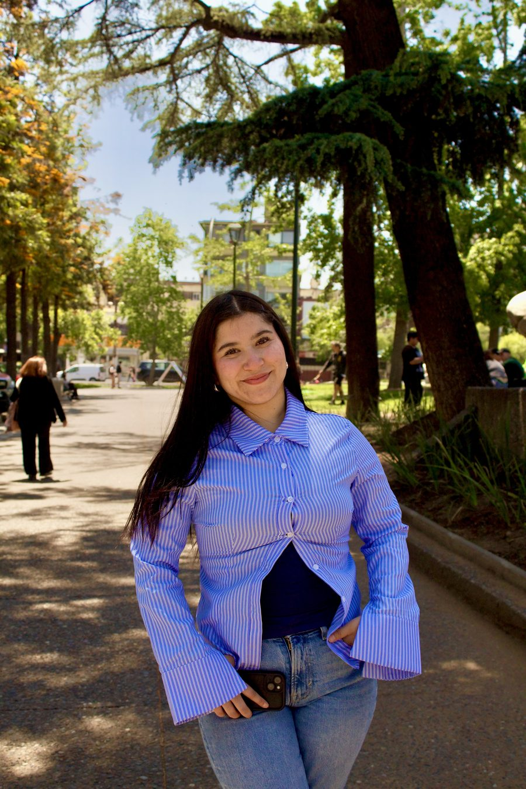

Quiero crear para mi marca
Estrategia, planificación y contenido con personalidad para comunicar lo que hace especial a tu proyecto.
Conocer el Estudio CreativoCreado por Camila Henríquez, publicista y creadora de contenido.
CamiCrea es un espacio para transformar ideas en contenido, proyectos y pequeñas acciones que te acerquen a lo que quieres.
Publicidad, creatividad, journaling, autocuidado y vida real, todo en un mismo lugar.
Estrategia, planificación y contenido con personalidad para comunicar lo que hace especial a tu proyecto.
Conocer el Estudio CreativoJournaling, autocuidado, hábitos y herramientas para avanzar a tu propio ritmo.
Explorar este espacioEste espacio nació para reunir dos partes de una misma historia: la publicista que transforma ideas en estrategias y la creadora que busca herramientas para vivir con mayor intención. Aquí puedes encontrar apoyo para hacer crecer tu marca y también recursos para conectar contigo.
Estrategia, contenido y creatividad para marcas con personalidad.
En el estudio creativo unimos estrategia, organización, creatividad y criterio visual para construir contenido que tenga sentido para tu marca y conecte con las personas correctas.
Definimos objetivos, líneas de contenido y calendarios editoriales que ordenan la comunicación de tu marca sin perder su personalidad.
Gestión de tus redes sociales día a día: publicaciones, interacción con tu comunidad y seguimiento cercano de lo que está pasando.
Piezas, fotografías, formatos y contenido audiovisual pensados para redes sociales, adaptados a la identidad de tu marca.
Redacción de textos y guiones para Reels, TikTok y publicaciones, cuidando el tono de voz y la intención de cada mensaje.
Conceptos y campañas puntuales para lanzamientos, fechas clave o necesidades específicas de tu marca.
Revisión del estado actual de tus redes y análisis de métricas orgánicas para entender qué está funcionando y qué se puede mejorar.
La gestión digital y la producción presencial de contenido se evalúan y cotizan según las necesidades de cada proyecto.
Cuéntame sobre tu marcaUna muestra de proyectos en los que Camila ha trabajado. Esta sección se irá completando con imágenes, objetivos y resultados de cada caso.
Objetivo: [Pendiente de completar]
Mi participación: [Pendiente de completar]
Trabajo realizado: [Pendiente de completar]
Resultado: [Pendiente de completar]
Objetivo: [Pendiente de completar]
Mi participación: [Pendiente de completar]
Trabajo realizado: [Pendiente de completar]
Resultado: [Pendiente de completar]
Objetivo: Conectar con la comunidad, reconocer la historia de Oncomamás y motivar a las personas a participar y aportar en su campaña de recaudación.
Mi participación: Redactora creativa, Community Manager y apoyo en cuentas.
Trabajo realizado: Desarrollo comunicacional de la campaña, redacción de contenidos, adaptación de mensajes para redes sociales y apoyo en la coordinación del proyecto.
Resultado: La campaña logró recaudar más de $40 millones para Oncomamás.
Ver proyectoObjetivo: [Pendiente de completar]
Mi participación: [Pendiente de completar]
Trabajo realizado: [Pendiente de completar]
Resultado: [Pendiente de completar]
Objetivo: [Pendiente de completar]
Mi participación: [Pendiente de completar]
Trabajo realizado: [Pendiente de completar]
Resultado: [Pendiente de completar]
Ver proyectoObjetivo: [Pendiente de completar]
Mi participación: Apoyo en la planificación y creación de contenido.
Trabajo realizado: Apoyó la planificación y creación de contenido para ADA Vestuario, desarrollando piezas que buscaban comunicar sus productos y transmitir el carácter mágico, cercano y significativo de la marca.
Resultado: [Pendiente de completar]
Ver proyectoUn espacio cercano para conectar contigo, ordenar tus ideas y avanzar a tu propio ritmo.
No se trata de tener una vida perfecta ni de sentirte motivada todos los días. Se trata de conocerte, volver a tus intenciones y encontrar pequeñas formas de cuidarte y avanzar.
Camila comparte los métodos, herramientas y hábitos que está probando en su propia vida: lo que funciona, lo que cuesta y todo lo que va aprendiendo en el proceso.
Seguir el procesoRecursos digitales creados para ayudarte a escribir, organizarte, reflexionar y convertir tus intenciones en pequeñas acciones posibles.
Manifestación con intención
Una práctica diaria y guiada para mantener presente tu intención, conectar emocionalmente con ella y acompañarla con una acción pequeña y realista.
La Plantilla Método 369 te acompaña cada día para escribir tu intención, sostenerla presente durante la jornada y cerrarla con gratitud y una acción concreta. No es una fórmula mágica: es un espacio diario para ordenar lo que quieres y dar un paso pequeño hacia ello.
Quiero crear una comunidad cercana en la que podamos compartir reflexiones, preguntas, pequeñas acciones, hábitos y herramientas que nos ayuden a avanzar sin presión.

Soy Camila Henríquez, publicista, creadora de contenido y fundadora de CamiCrea. Me gusta transformar ideas en mensajes claros, estrategias ordenadas y contenido con personalidad.
También estoy aprendiendo a construir una vida más consciente, organizada y conectada conmigo. De ese proceso nacen las herramientas de journaling, autocuidado y bienestar que comparto aquí.
Este espacio reúne esas dos partes de mí: la publicista que ayuda a las marcas a comunicar lo que las hace especiales y la creadora que comparte herramientas para que otras mujeres también puedan avanzar hacia lo que desean.
Si tienes una marca, proyecto o idea y necesitas apoyo creativo, escríbeme para conocer tus necesidades y preparar una propuesta adecuada.